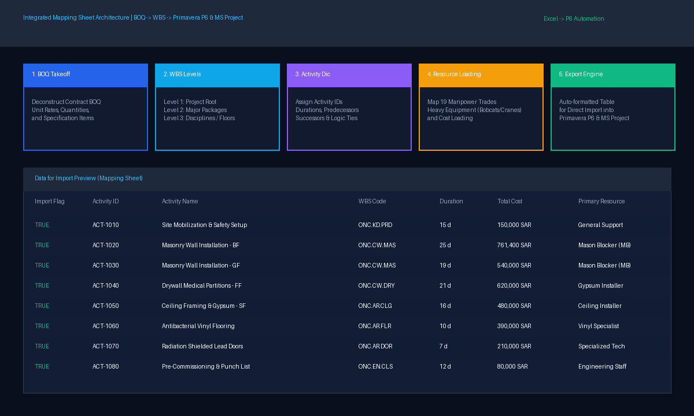
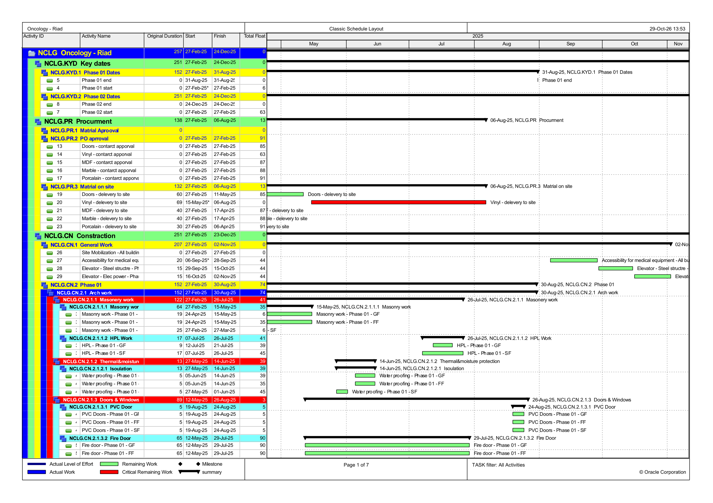
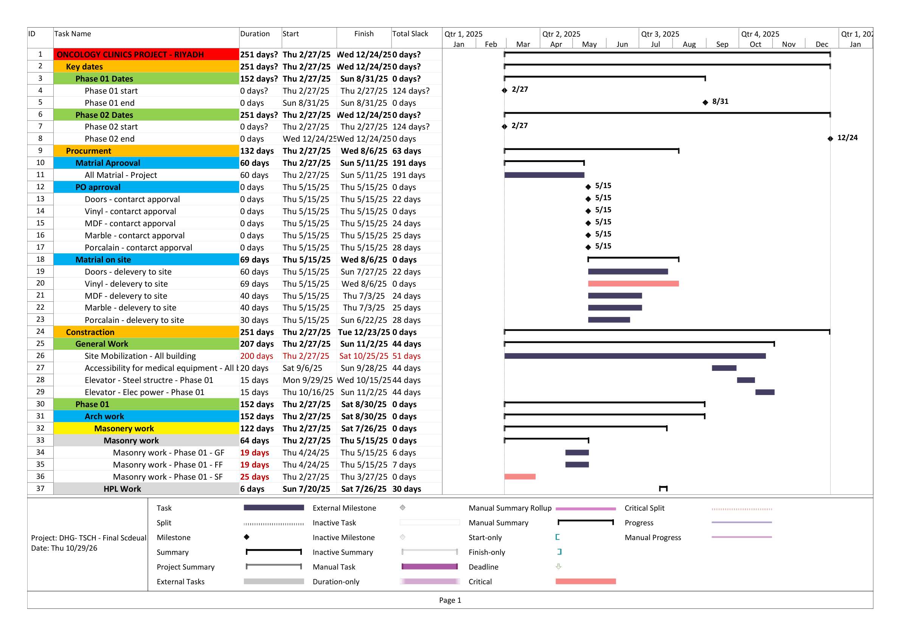
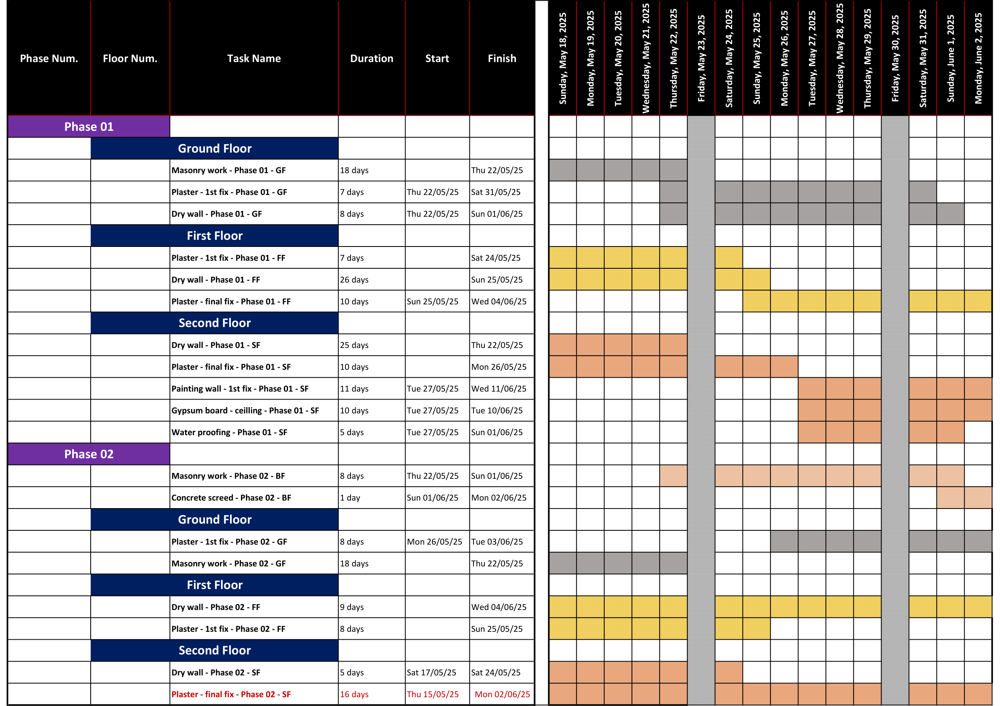

التحكم في التكاليف وحوكمة الميزانيات وإدارة القيمة المكتسبة (EVM)
منهجية دقيقة تبدأ من تفكيك مقايسة المشروع وبناء ميزانية الصفر (Budget Zero)، وفصل التكاليف المباشرة عن غير المباشرة، مع التوزيع الزمني الدقيق (Time-Phasing) لكافة بنود المصروفات والإشراف والمعدات.
دورة حوكمة التكاليف المتكاملة (6-Step Cost Governance Cycle)
فحص العقد والمقايسة
مراجعة شاملة لجدول الكميات، مطابقة الأسعار التقديرية بالواقع السوقي، وتحديد بنود المخاطر.
ميزانية الصفر (Budget Zero)
تحديد تكاليف التنفيذ الحقيقية لكل بند وفصل التكاليف المباشرة عن التكاليف الإدارية وغير المباشرة.
أكواد التكلفة (CA-Codes)
إنشاء شجرة أكواد محاسبية وهندسية لربط المشتريات ومقاولي الباطن والعمالة بحزم العمل.
نموذج بيانات Power BI
بناء Star-Schema data model يربط الفواتير والكميات وجدول P6 الزمني بقواعد بيانات موحدة.
رصد الهوالك والمستخلصات
حساب معدلات استهلاك المواد (المخطط vs الفعلي) والتدقيق الدوري لمستخلصات مقاولي الباطن.
التنبؤ المالي (EAC & GP%)
تحديث مؤشرات EVM شهرياً وتقدير التكلفة الإجمالية عند النهاية وحماية هامش الربح التشغيلي.
محاكي إدارة القيمة المكتسبة التفاعلي (Interactive EVM Calculator)
قم بتغيير قيم المشروع أدناه لتجربة حساب مؤشرات الأداء الحقيقي (CPI / SPI / EAC / VAC) لحظياً:
التخطيط والبرمجة الزمنية وتوظيف ورقة الربط (Mapping Sheet)
منهجية متكاملة لتحويل مستندات المشروع إلى خطط زمنية احترافية معتمدة. يعتمد أسلوبي على بناء ورقة الربط الهندسية (Mapping Sheet)، وهي أداة إكسل متقدمة تربط بنود المقايسة (BOQ) بهيكل تجزئة العمل (WBS) ومصفوفة الموارد والأكواد، مما يسهل المراجعة الحسابية والتصدير المباشر والسلس إلى برامج Primavera P6 و Microsoft Project.
هندسة ورقة الربط (Mapping Sheet) للتصدير لـ P6 و MS Project
تتيح ورقة الربط تدقيق العلاقات المنطقية (Predecessors & Successors) والأوزان النسبية للأنشطة، وتحميل العمالة والمعدات تلقائياً، وإنشاء ملفات الجداول الزمنية دون أخطاء يدوية.

خطوط الأساس والجداول الزمنية المحدثة (P6 & MS Project)
نماذج حية تشمل جدول مسار الأنشطة الحرجة (Critical Path Method)، وجداول النظرة المستقبلية لأسبوعين (2-Week Look Ahead)، والمتابعة الدورية لانحرافات مدد التنفيذ.

جدول بريمافيرا P6
جدول MS Project
جدول 2-Week Lookahead جدول مستشفى الطائف
جدول مستشفى الطائف
دورة عمل المكتب الفني الشاملة وحصر الكميات
يبدأ دور المكتب الفني بدراسة المقايسة الأخيرة واعتماد إجماليها كإجمالي تعاقدي للعقد، ثم تنفيذ دورة العمل الهندسية الصارمة عبر المراحل التالية:
استلام ودراسة المشروع
مراجعة المخططات التصميمية، جداول الكميات، شروط العقد وتحديد البنود المستحدثة وغير المتطابقة.
الحصر الهندسي وإعداد الشوب دروينج
إنتاج مخططات تنفيذية معمارية وكهروميكانيكية متوافقة مع الكود والتنسيق بين التخصصات لمنع التعارضات.
اعتمادات المواد والموردين
إعداد ملفات الاعتماد الفني (Submittals)، متابعة اختبارات العينات بالمختبرات المعتمدة، واعتماد أوامر الشراء.
المستخلصات والمطالبات التعاقدية
تدقيق حصر الكميات الفعلي المنفذ على الطبيعة، مراجعة مستخلصات مقاولي الباطن، وإعداد مستخلص المالك الدوري.
الحصر الختامي والتسليم النهائي
إعداد مخططات كما نُفذ (As-Built Drawings)، الحصر الختامي، إنهاء محاضر الاستلام الابتدائي والنهائي للمشروع.
سجل المشروعات المنفذة عبر دورة المكتب الفني:
إنشاء طريقين في دمياط (أسفلت وخرساني)
طريق دمياط - عزبة البرج، وإنشاء طريق خرساني ثقيل بميناء دمياط لتحمل أوزان الحاويات الثقيلة واختبارات التربة.
مشروع إنشاء فندق بالغردقة
أعمال إنشائية وتشطيبات معمارية فاخرة لمنتجع ساحلي، شاليهات وحمامات سباحة مع معالجة الرطوبة البحرية.
مشروع العاصمة الإدارية (الكمبوند)
إدارة تنفيذ كمبوند فندقي متكامل بقيمة 450M جنيه: أجنحة، بحيرات صناعية، ملاعب، ومبنى اجتماعي.
مشروع تطوير عدد 3 بنوك زراعية
إعداد مقايسات وأعمال شوب دروينج وحصر وتنفيذ شامل للتجديدات المعمارية والشبكات لعدد 3 فروع بنكية.
مشروع إنشاء أسوار بالمنوفية وسوهاج
حصر ومستخلصات وأعمال تنفيذ لأسوار خرسانية وبوابات أمنية لمواقع حيوية بقيمة تجاوزت 87 مليون جنيه.
مشروع إنشاء 4 عمارات فندقية بالعلمين الجديدة
إدارة التكاليف وحصر كميات ومتابعة تنفيذ 4 عمارات سياحية فاخرة بمدينة العلمين الجديدة بقيمة 39M جنيه.
مشروع إنشاء 2 عمارة سكنية تابعة لماونتن فيو
متابعة التكاليف والمكتب الفني لعمارات سكنية خاصة بكبرى شركات التطوير العقاري (Mountain View).
مستشفى الأورام بالرياض
إدارة مكتب فني كاملة: شوب دروينج للأسقف المعلقة، غرف الرنين والأشعة، الفينيل، وميزانية بقيمة 35M ريال.
مستشفى الأورام بالطائف
تدقيق المقايسة والعقد بمستشفى الملك سعود، تحليل التكاليف غير المباشرة وفصل الفجوة المالية وجدول المشروع.
ذكاء الأعمال وأتمتة التقارير (Power BI, DAX, Python, SQL Server & n8n)
التحول الرقمي الكامل في إدارة المشروعات عبر التوظيف المتقدم لـ Python و SQL Server بجانب Power BI و n8n Automation:
Python for Engineering Analytics
أتمتة استخراج البيانات من جداول الـ PDF والمقايسات، ومعالجة تنظيف البيانات (Data Cleansing)، وإنشاء سكريبتات تحليل أسعار البنود ومحاكاة المخاطر المالية.
SQL Server Data Warehouse
بناء مستودعات بيانات علائقية لحفظ كافة سجلات الشراء ومستخلصات المقاولين وأرصدة المخازن، مع استعلامات SQL متقدمة لتغذية لوحات التحكم دون تأخير.
Power BI & Advanced DAX
تصميم نماذج Star-Schema بمصفوفات وربط دقيق (Bridge Tables)، مع كتابة معادلات DAX لحساب المؤشرات التراكمية، ومعدلات الأداء، ونسب الهالك التلقائية.
n8n AI Workflow Automation
بناء وكلاء ذكاء اصطناعي يربطون رسائل الميدان عبر الواتساب بنظام الموافقات المهنية وتحديث قواعد البيانات ولوحات المتابعة فورياً.
تسخير Python و SQL Server و n8n الذكي في إدارة المشروعات
كيف نحول التدفق الهائل من صور ورسائل الموقع وطلبات الاعتماد إلى تدفق بيانات منظم وموثق آلياً.
حل مبتكر لتحديات توثيق المواقع الإنشائية
يعاني قطاع المقاولات من ضياع المعلومات في غرف المحادثات وتأخر وصول تقارير الإنتاجية اليومية إلى الإدارة العليا. قمت بتصميم نظام أتمتة يدمج n8n و Python و SQL Server يستقبل التحديثات غير المنظمة (رسائل نصية، صور تقدم الأعمال، مذكرات استلام، ومستخلصات)، ويقوم بتحليلها باستخدام نماذج الذكاء الاصطناعي:
- تصنيف فوري لحزم العمل: ربط كل تحديث بكود التكلفة (CA-Code) المحدد.
- تقييم المخاطر والمطابقة: مطابقة الأعمال المنفذة بالمواصفات والجدول الزمني.
- مرحلة التحقق البشري (Approval Step): إرسال بطاقة ملخصة للمهندس للاعتماد بضغطة زر.
- المزامنة التلقائية: التخزين في مستودع SQL Server والتحديث المباشر للتقارير دون إدخال يدوي مكرر.